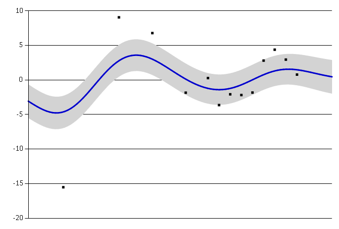
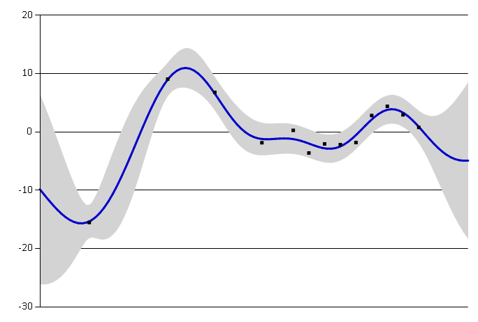
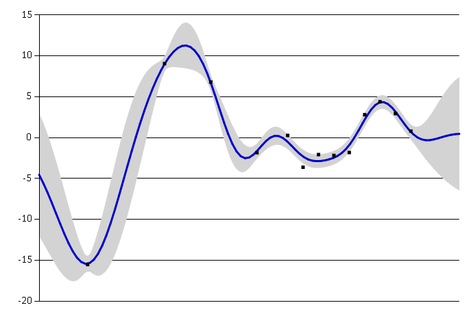
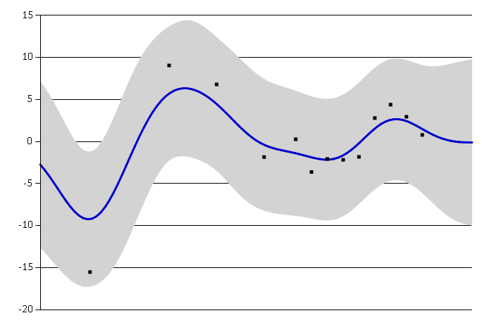

Covariance functions
Covariance functions (also called kernels) are the key ingredient in using Gaussian processes. They encode all assumptions about the form of function that we are modelling. In general, covariance represents some form of distance or similarity. Consider two input points (locations) \(x_i\) and \(x_j\) with corresponding observed values \(y_i\) and \(y_j\). If the inputs \(x_i\) and \(x_j\) are close to each other, we generally expect that \(y_i\) and \(y_j\) will be close as well. This measure of similarity is embedded in the covariance function.
The Ariadne library currently implements only the squared exponential covariance function.
Squared exponential kernel
\[k(x_i, x_j) = \sigma^2 \exp\left( - \frac{(x_i - x_j)^2}{2 l^2} \right) + \delta_{ij} \sigma_{\text{noise}}^2\]
where \(\sigma^2 > 0\) is the signal variance, \(l > 0\) is the lengthscale and \(\sigma^2_{\text{noise}} >= 0\) is the noise covariance. The noise variance is applied only when \(i = j\).
Squared exponential is appropriate for modelling very smooth functions. The parameters have the following interpretation:
Lengthscale \(l\) describes how smooth a function is. Small lengthscale value means that function values can change quickly, large values characterize functions that change only slowly. Lengthscale also determines how far we can reliably extrapolate from the training data.
Small lengthscale Large lengthscale
Large lengthscale
Signal variance \(\sigma^2\) is a scaling factor. It determines variation of function values from their mean. Small value of \(\sigma^2\) characterize functions that stay close to their mean value, larger values allow more variation. If the signal variance is too large, the modelled function will be free to chase outliers.
Small signal variance Large signal variance Noise variance \(\sigma^2_{\text{noise}}\) is formally not a part of the covariance function itself. It is used by the Gaussian process model to allow for noise present in training data. This parameter specifies how much noise is expected to be present in the data.
Small noise variance Large noise variance 
Squared exponential kernel can be created from its parameters.
1: 2: 3: 4: 5: 6: 7: 8: |
open Ariadne.Kernels // hyperparameters let lengthscale = 3.0 let signalVariance = 15.0 let noiseVariance = 1.0 let sqExp = SquaredExp.SquaredExp(lengthscale, signalVariance, noiseVariance) |
Squared exponential, l = 3.00, σ² = 15.00, σ²_{noise} = 1.00
We can also use it to directly initialize a Gaussian process.
1:
|
let gp = sqExp.GaussianProcess() |
Information on how to select parameters for the squared exponential automatically are in the Optimization section of this website.
Creating custom covariance functions
Any covariance function can be used in conjunction with Gaussian processes in Ariadne. Gaussian process constructor requires simply a function which takes a pair of input locations and computes their covariance.
General covariance function (kernel) has the following type:
1:
|
type Kernel<'T> = 'T * 'T -> float |
For example, we can define a simple linear kernel as follows:
1: 2: 3: 4: 5: 6: 7: 8: 9: |
open Ariadne.GaussianProcess let linearKernel (x1, x2) = let var = 1.0 let bias = 0.0 let offset = 0.0 bias + var * (x1 - offset)*(x2 - offset) let gpLinear = GaussianProcess(linearKernel, Some 1.0) |
This covariance function corresponds to a non-efficient way of doing Bayesian linear regression.
from Ariadne
Full name: CovarianceFunctions.lengthscale
Full name: CovarianceFunctions.signalVariance
Full name: CovarianceFunctions.noiseVariance
Full name: CovarianceFunctions.sqExp
from Ariadne.Kernels
Full name: CovarianceFunctions.gp
Full name: covarianceFunctions.Kernel<_>
val float : value:'T -> float (requires member op_Explicit)
Full name: Microsoft.FSharp.Core.Operators.float
--------------------
type float = System.Double
Full name: Microsoft.FSharp.Core.float
--------------------
type float<'Measure> = float
Full name: Microsoft.FSharp.Core.float<_>
from Ariadne
Full name: CovarianceFunctions.linearKernel
Full name: CovarianceFunctions.gpLinear
--------------------
new : covariance:Kernel<'T> * noiseVariance:float option -> GaussianProcess<'T>
new : covariance:Kernel<'T> * meanFunction:MeanFunction * noiseVariance:float option -> GaussianProcess<'T>